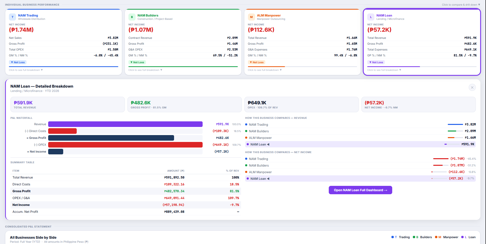
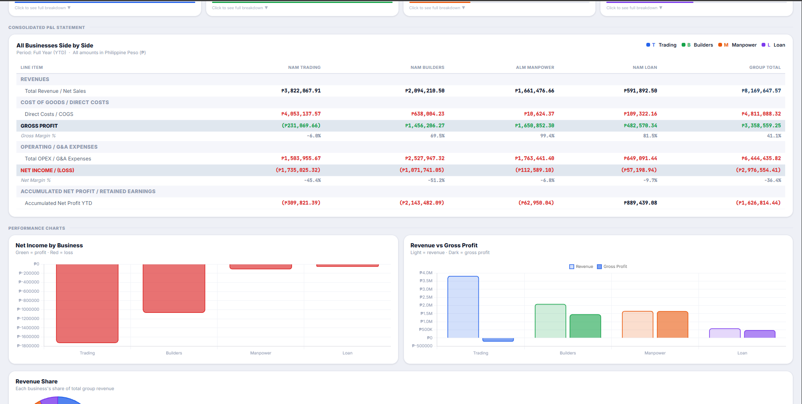
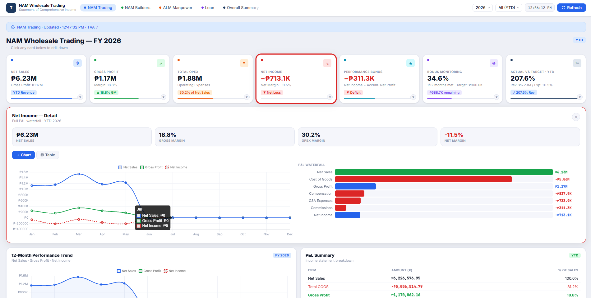
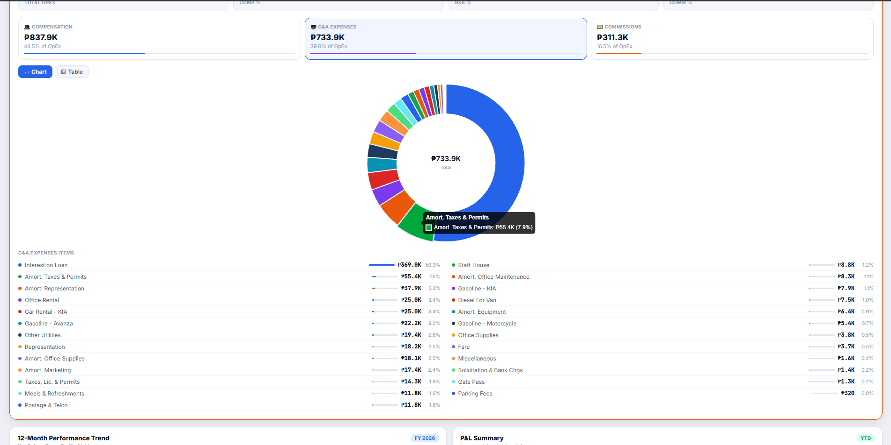
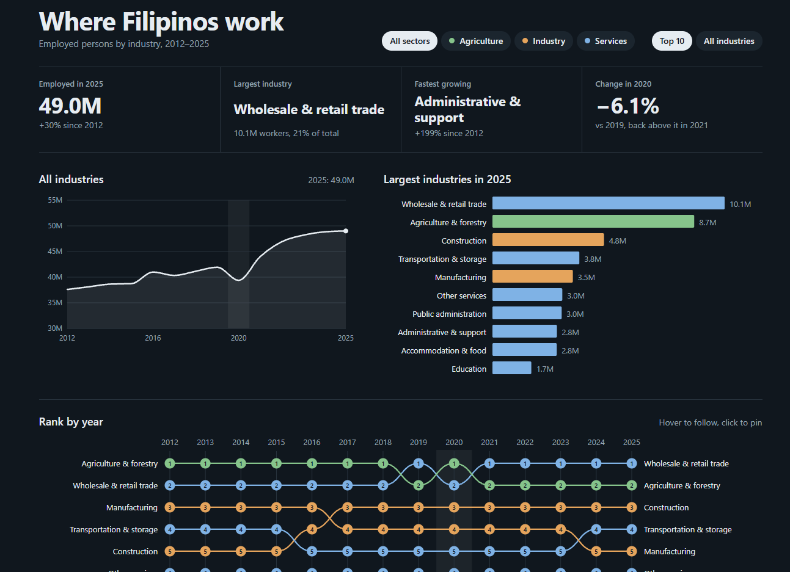
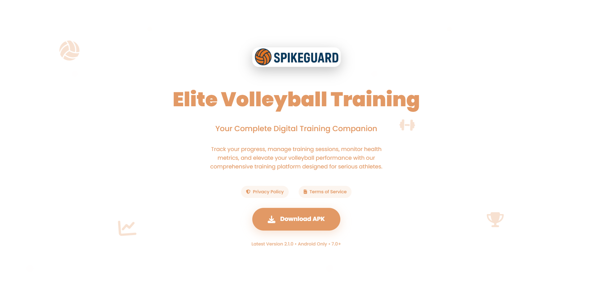

BI and dashboard developer · Batangas, Philippines
I turn messy business data into dashboards people actually use.
I consolidate scattered spreadsheets, automate the reporting nobody wants to do by hand, and build live views a business owner can open and understand without me in the room.
About
I studied Business Analytics at Batangas State University and spent my internship at a construction and supply company, where month-end reporting lived in a stack of hand-typed spreadsheets. I replaced it with dashboards the owner could open himself.
What I like is the moment a tangle of sheets turns into one clear picture, and then the moment someone uses it without asking me how. I care about the numbers being right, and almost as much about the thing being pleasant to look at.
Outside of client work I build small things for fun — vanilla JavaScript, SVG, public datasets I get curious about. That habit is why my dashboards don't look like default templates.
- Based in
- Batangas, Philippines. Open to remote, hybrid or on-site.
- Looking for
- BI developer, dashboard developer or data analyst roles.
- Also taking
- Freelance dashboard and reporting projects.
- Works in
- English and Filipino.
Selected work
From my internship, my capstone, and my own curiosity. Open any project for the detail.
Live financial dashboard for four business units
Web app · NAM Builders and Supply Corporation · 2026
Detail
Live financial dashboard for four business units
Web app · NAM Builders and Supply Corporation · 2026
- Problem
- Trading, Builders, Manpower and Loan each reported separately, and profit and loss was only visible once someone compiled it by hand, so decisions ran on stale numbers.
- What I built
- A browser-based statement of comprehensive income for all four units plus an overall summary: clickable KPI cards that drill down, month and year-to-date filters, a 12-month performance trend, a full P&L breakdown table, target-vs-actual tracking and bonus monitoring — pulling live from Google Sheets through Apps Script and refreshing on its own.
- Tools
- HTMLCSSJavaScriptGoogle Apps ScriptREST APIChart.js
- Result
- Six drill-down views and 10+ charts covering PHP 6.5M+ in annual revenue, with performance against a PHP 600,000 commission target visible in real time instead of weeks later.

Consolidated executive KPI dashboard
Excel · NAM Builders and Supply Corporation · 2026
Detail
Consolidated executive KPI dashboard
Excel · NAM Builders and Supply Corporation · 2026
- Problem
- Nobody could see the company as one picture without rebuilding the consolidation manually every month.
- What I built
- A single executive KPI dashboard: Power Query pipelines feeding a DAX model, month and year filters, and drill-downs from company total to individual business unit.
- Tools
- ExcelPower QueryDAXVBA
- Result
- Consolidated PHP 9.6M+ in annual revenue across four units into one view, presented directly to the company owner.

Target vs. actual variance tracking
Excel · 3 divisions, 15+ client accounts · 2026
Detail
Target vs. actual variance tracking
Excel · 3 divisions, 15+ client accounts · 2026
- Problem
- Targets were set at the start of the year and checked against actuals only occasionally, so gaps surfaced long after anything could be done about them.
- What I built
- Variance models across 3 divisions, 15+ client accounts and 600+ headcount, tracking gross margin %, net income and operating expense deviation against plan.
- Tools
- ExcelPower QueryDAXFinancial modeling
- Result
- The templates were adopted company-wide for FY2026 reporting.

Operating expense sheets that fill themselves
Excel and VBA · 19+ monthly sheets · 2026
Detail
Operating expense sheets that fill themselves
Excel and VBA · 19+ monthly sheets · 2026
- Problem
- Monthly operating expense sheets were typed up one at a time from the same source data — slow, and easy to get wrong.
- What I built
- VBA macros that populate 19+ monthly operational expense tracking sheets from a single source, plus written usage guides and hands-on training for the company accountant.
- Tools
- ExcelVBAProcess documentation
- Result
- Manual re-entry across the monthly expense pack was eliminated, and non-technical staff now run the workflow themselves.

Where Filipinos work, 2012–2025
Personal project · interactive data visualization
Detail
Where Filipinos work, 2012–2025
Personal project · interactive data visualization
- Problem
- Labour force data is public, but it sits in statistical tables that are hard to read and harder to compare across years.
- What I built
- An interactive view of employed persons by industry from 2012 to 2025: filters for agriculture, industry and services, the largest industries in 2025, and a rank-by-year chart you can follow on hover or pin with a tap on mobile.
- Tools
- JavaScriptSVGPSA OpenSTAT data
- Result
- Built for my own curiosity, using the Philippine Statistics Authority Labor Force Survey. An independent project, not an official PSA product.

SpikeGuard, a volleyball training app
Capstone · Batangas State University · 2026
Detail
SpikeGuard, a volleyball training app
Capstone · Batangas State University · 2026
- Problem
- Coaches and student-athletes tracked training, health and skill assessments on paper, with no shared history to look back on.
- What I built
- An Android app with six modules — progress tracking, training plans, health monitoring, skill assessments, athlete profiles and performance analytics — on a MySQL backend with encrypted storage and role-based access, taken through the full SDLC including user acceptance testing.
- Tools
- MySQLEncrypted storageRole-based accessUAT
- Result
- Delivered on schedule with zero critical post-deployment defects.

Freelance
[I'm drawn to teams juggling messy, manual financial reporting — the kind of work I did at NAM Builders — and want a dashboard that finally tells them what's happening in real time.]
Dashboard design and build
Interactive dashboards in Excel, Power BI or on the web, with the filters and drill-downs your team will actually open.
Excel and VBA automation
Macros and Power Query flows that take the repeat typing and monthly rebuild work off your hands.
Data visualization
Charts and visual stories built with JavaScript and SVG, made to be read at a glance.
Reporting cleanup
Scattered, conflicting sheets consolidated into one set of numbers everyone can trust.
Skills
Analysis and BI
Automation and engineering
Programming
Tools
Experience and education
-
Feb – May 2026
Data Analyst Intern, NAM Builders and Supply Corporation
Tanauan City, Batangas. Executive dashboards, variance reporting, Excel and VBA automation. -
2022 – 2026
BS Information Technology, Business Analytics
Batangas State University TNEU — JPLPC Malvar - Nov 2025
Big Data 101
IBM SkillsBuild - Aug 2025
Microsoft Azure AI Fundamentals (AZ-900)
TESDA - May 2025
Data Analytics Essentials
Cisco Networking Academy - Feb 2024
Introduction to Data Science
Cisco Networking Academy
Contact
Open to BI, dashboard and data analyst roles, and to freelance projects. Send me a few lines about the data you're working with.